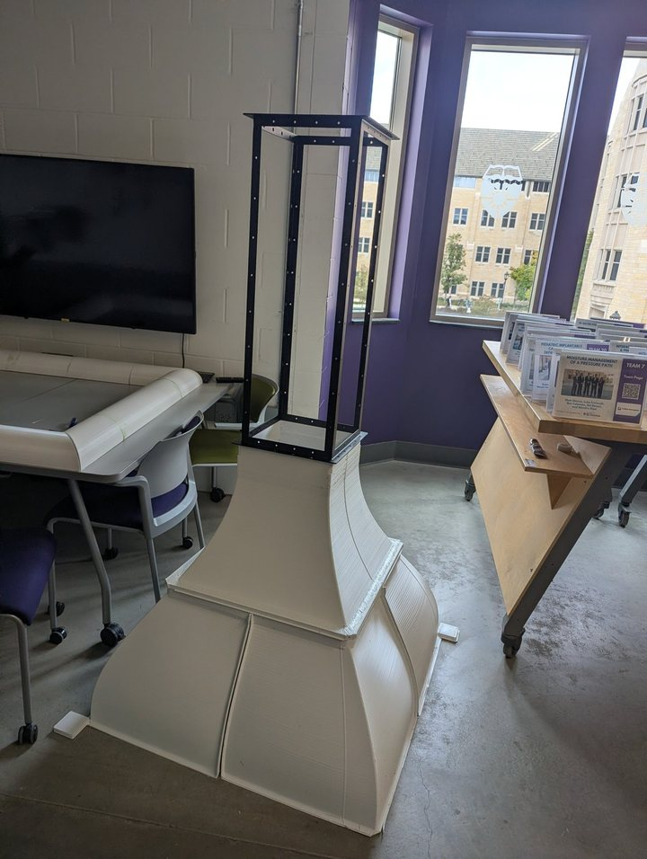

Senior design · Project manager
Team of 4 · Jun 2026 – Dec 2026
Wind Tunnel Schlieren Module
Sponsor: Twin City Fan Companies
Twin City Fan tests 3D-printed prototypes, and the surface finish changes the airflow. They needed a way to see that. We're building a module that bolts onto their AMCA 210 suction tunnel and comes off again, plus a Schlieren system that shows density gradients over the test airfoils.
Requirements
| Requirement | Value |
|---|---|
| Max airflow / pressure | 10,000 CFM (4.72 m³/s) / 10 in. w.g. (2.5 kPa) |
| Configuration | Suction, fan downstream. Bolt-on and removable. |
| Camera | At least 300–400 fps, at least 30 s of video, and a 16 in. horizontal wake view. |
| Test articles | About 200 mm chord airfoils. Easy to swap, rotate, and lock. |
| Budget | $10,000 |
What I own
- Project manager since October 2026. I built the master task tracker and the DFMEA, and I own the budget and the BOM.
- The inlet contraction, the diffuser, the side-window FEA, and the mirror mounts and carts.
- The high-speed camera, lens, and mirrors. Our Schlieren advisor approved that selection.
- The hand calculations: flow speed, Mach and Reynolds number, pressure drop, contraction ratio, and diffuser length.
Calculated design values. Testing is in December 2026. Measured numbers come after that.

Decisions
Wall material came out of a calculation, not a guess. Roark plate-bending work showed deflection scales with 1/t3, which ruled out thin, unribbed 3D-printed walls. So the inlet is 3D-printed, the diffuser is CNC-cut 3/8 in. plywood, and the test-section windows are clear polymer.
I brought the diffuser down from 7° to 3° per wall. That's 6° included.
For the camera I chose the Teledyne BFS-U3-04S2M-C. A 1.6 MP model only reached 226 fps, which was too slow, and a Nikon D7000 was stuck at about 250 µs of exposure.
The windows are an FEA comparison of 1/4 in. and 3/8 in. total thickness, at the 1.86 kPa design load, fixed frame, with the mesh refined. 3/8 in. is the lead option. Final material is waiting on a polycarbonate versus acrylic clarity test.
| Window thickness | Mesh size | Nodes | Max deflection | Max stress |
|---|---|---|---|---|
| 1/4 in. | 0.25 in. | 90,668 | 0.0210 in. | 442.4 psi |
| 1/4 in. | 0.125 in. | 924,389 | 0.0218 in. | 486.3 psi |
| 3/8 in. | 0.25 in. | 90,668 | 0.0057 in. | 133.6 psi |
| 3/8 in. | 0.125 in. | 667,613 | 0.0059 in. | — |
Lessons
I mixed half-angle with included angle, and an Excel RADIANS error on top of that produced a diffuser length of 167.6 in. It was wrong. I write the angle convention down now.
Uncured Bondo, a CNC edge-pass mistake, and reprints of the inlet pushed me to a task tracker with one owner per task. That tracker is also how the PM role landed with me in October.
Testing is in December 2026. I don't have a measured velocity, a measured pressure drop, or a Schlieren image yet.
Back to projects